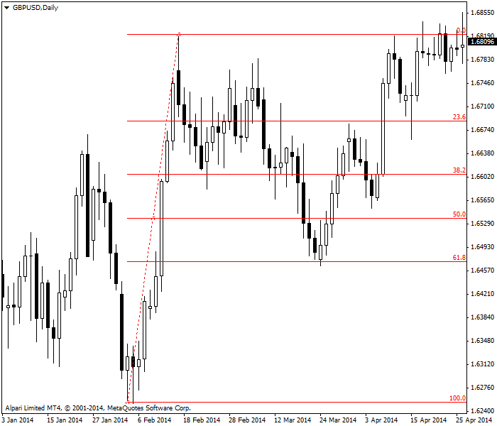
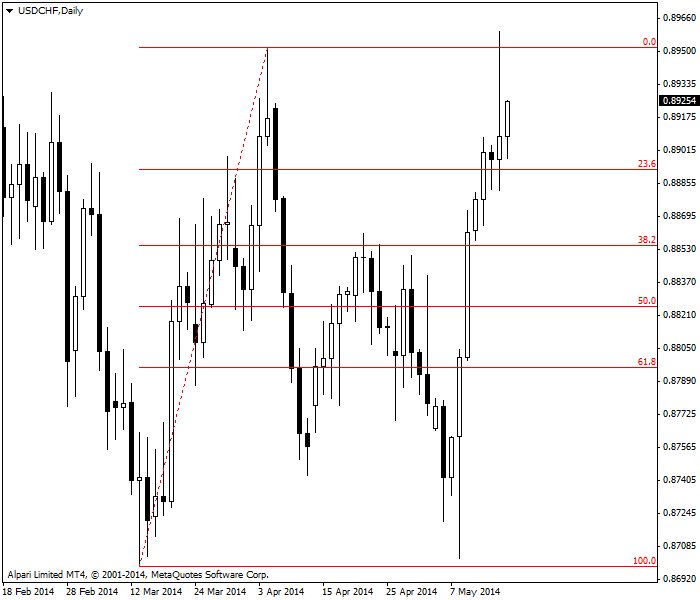
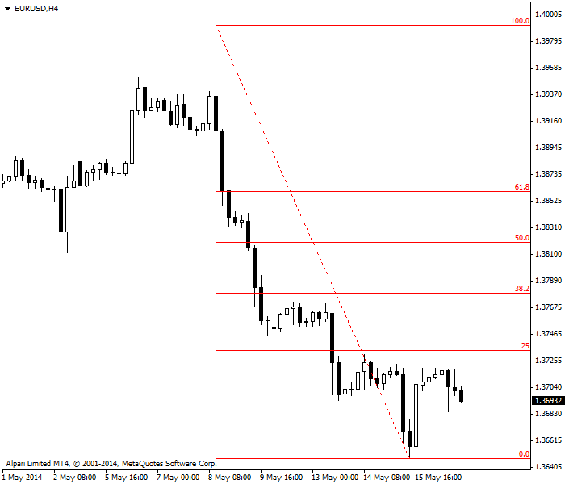
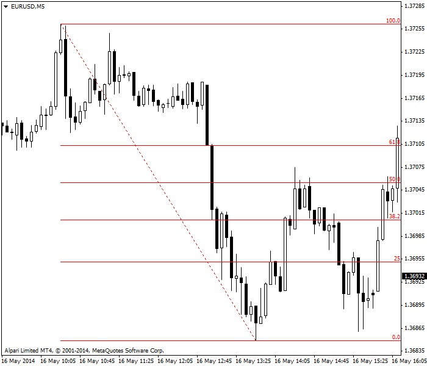

<!DOCTYPE html>
<html>
</html>
<head>
  <meta charset="utf-8">
  <meta http-equiv="X-UA-Compatible" content="IE=edge">
  <title>外汇站（fx-z.com） - 斐波那契回调</title>
  <meta name="description" content="">
  <meta name="viewport" content="width=device-width, initial-scale=1">
  <meta name="robots" content="all,follow">
  <!-- Bootstrap CSS-->
  <link rel="stylesheet" href="vendor/bootstrap/css/bootstrap.min.css">
  <!-- Font Awesome CSS-->
  <link rel="stylesheet" href="vendor/font-awesome/css/font-awesome.min.css">
  <!-- Google fonts - Roboto-->
  <link rel="stylesheet" href="https://fonts.googleapis.com/css?family=Roboto:400,300,700,400italic">
  <!-- owl carousel-->
  <link rel="stylesheet" href="vendor/owl.carousel/assets/owl.carousel.css">
  <link rel="stylesheet" href="vendor/owl.carousel/assets/owl.theme.default.css">
  <!-- theme stylesheet-->
  <link rel="stylesheet" href="css/style.default.css" id="theme-stylesheet">
  <!-- Custom stylesheet - for your changes-->
  <link rel="stylesheet" href="css/custom.css">
  <!-- Favicon-->
  <link rel="shortcut icon" href="img/favicon.png">
  <!-- Tweaks for older IEs--><!--[if lt IE 9]>
    <script src="https://oss.maxcdn.com/html5shiv/3.7.3/html5shiv.min.js"></script>
    <script src="https://oss.maxcdn.com/respond/1.4.2/respond.min.js"></script><![endif]-->
</head>
<body>
  <div id="all">
    <div class="container-fluid">
      <div class="row row-offcanvas row-offcanvas-left"> 
        <!--   *** SIDEBAR ***-->
        <div id="sidebar" class="col-md-4 col-lg-3 sidebar-offcanvas">
          <div class="sidebar-content">
            <h1 class="sidebar-heading"> <a href="https://fx-z.com">fx-z.com</a></h1>
            <p class="sidebar-p">介绍外汇相关的基本知识，告诉您如何进行自己的技术面和基本面分析，讲解先进的交易理念，并且为您阐述失败交易者与专业交易者之间的真正区别。 </p>
            <p class="sidebar-p">通过这些课程的学习，您将学会如何根据自己的优势来应用情绪分析，还将了解真实世界的事件会对货币汇率产生什么影响，央行在外汇市场中所发挥的作用，以及交易者在颇受欢迎的即期外汇交易中有哪些选择方案。 </p>
            <ul class="sidebar-menu">
                <!-- Link-->
                <li class="sidebar-item"><a href="https://fx-z.com" class="sidebar-link">首页</a></li>
                <!-- Link-->
                <li class="sidebar-item"><a href="cihui.html" class="sidebar-link">外汇词汇</a></li>
                <!-- Link-->
                <li class="sidebar-item"><a href="ebook.html" class="sidebar-link">获取外汇电子书</a></li>
            </ul>
            <p class="social"><a href="https://www.cn-forextime.com/zh?partner_id=4920383" target="_blank"data-animate-hover="pulse" class="external facebook"><i class="fa fa-eur"></i></a><a href="https://www.cn-forextime.com/zh?partner_id=4920383" target="_blank" data-animate-hover="pulse" class="external gplus"><i class="fa fa-gbp"></i></a><a href="https://www.cn-forextime.com/zh?partner_id=4920383" target="_blank" data-animate-hover="pulse" class="external twitter"><i class="fa fa-rmb"></i></a><a href="https://www.cn-forextime.com/zh?partner_id=4920383" target="_blank" title="" class="external instagram"><i class="fa fa-dollar"></i></a><a href="https://www.cn-forextime.com/zh?partner_id=4920383" target="_blank" data-animate-hover="pulse" class="email"><i class="fa fa-money"></i></a></p>
            <div class="copyright text-center text-md-left">
             
              
            </div>
          </div>
        </div>
        <!--   *** SIDEBAR END ***  -->
        <!--   *** DETAIL ***-->
        <div class="col-md-8 col-lg-9 content-column white-background">
          <div class="small-navbar d-flex d-md-none">
            <button type="button" data-toggle="offcanvas" class="btn btn-outline-primary"> <i class="fa fa-align-left mr-2"></i>菜单</button>
            <h1 class="small-navbar-heading"> <a href="https://fx-z.com/7-2.html">下一篇 </a></h1>
          </div>
          <div class="row">
            <div class="col-xl-10">
              <div class="content-column-content">
                <h1>斐波那契回调</h1>
       <p>
    令技术分析交易者引以为豪的是，他们采用了科学的观察方法并且从科学中借鉴数学理念，但后来，他们又坠入自中世纪以来从未被证实的迷信之中。这是交易世界最大的谜题之一。
</p>
<p>
    生活于 1170 至 1250 年间的意大利数学家 Leonardo Pisano Bigollo，又称“斐波那契”（Bonacci 之子），重新发现了一个数列，而早在他之前，该数列已被人发现于印度。斐波那契数列只是众多算术数列之一，但它确实有一些有趣的特性。一方面，斐波那契数列与自然界中的各种现象有关，例如鹦鹉壳螺旋线和向日葵花瓣等。另一个有趣的特性为，它既适用于正数，也适用于负数。而且，每第三个数字是 2 的倍数，每第四个数字是 3 的倍数，每第五个数字是 4 的倍数，依次类推。
</p>
<p>
    斐波纳契数列为 0,1,1,2,3,5,8,13,21,34,55,89,144 等。每个数字是前两个数字之和。斐波那契数列的神奇之处在于每个数大约是前一个数的 1.618 倍。这个比率构筑了黄金矩形的基础；古希腊人将黄金矩形用于建筑中，而且画家们在其整个历史中均采用黄金矩形来设定画布尺寸，从而画出最令人眼感到愉悦的形状。如果您用任何数除以后一个数，您将得到 61.8。有时，小数点后的数字并不是确切的 61.8，例如 8/13 = 0.6153，而 55/89 = 0.6179。数列越往后走，数值比越接近 1.618 或 61.8。另一个在整个数列中保持一致的比率为 38.2%，由数列中的任何数字除以它后面第二个数得出。
</p>
<p>
    在交易中，斐波那契数常用于估计走势恢复前的回调幅度。众所周知，价格不会沿直线移动，而是蜿蜒曲折地前进两步，后退一步。我们使用斐波那契比率来根据前进的两步预测后退的一步。该过程包括寻找低点，以及回落前的下一个高点。我们假设回落或回调将是关键的斐波那契比率之一—— 23.6%、38.2% 或 61.8%。当价格回落幅度达到前一轮上涨走势的 61.8% 时，我们预计回落将停止并触及支撑位。如果未达到 61.8%，我们预计回落将一路下探最低点，然后开始上涨走势，或者下探 100% 回调位（即使 100 不是斐波那契数）。大多数分析师还将 50% 回调位包括在内；这一理念最早由 20 世纪交易员 W.D. Gann 发明，虽然 50% 回调位也不是斐波那契数。
</p>
<p>
    请参见下图；图中，GBP/USD 经过强劲的上涨走势后出现标准的 61.8% 回调位。当然，该图似乎验证了斐波那契数列的应用。
</p>
<p>
     
</p>
<p>
    斐波那契回调完美匹配 EUR/USD 每日图
</p>
<p>
    将该图与下图比较。下图中，价格击破 61.8% 回调位，然后几乎一路下探 100% 回调位，之后反弹走高——然后越过前一个最高点。我们可以说，在 61.8% 回调位设置支撑线是失败的，但“理论”最终有效——击破 61.8% 回调线后，价格确实几乎触及 100% 回调线。
</p>
<p>
    <br/>
</p>
<p>
     
</p>
<p>
    斐波那契回调线不适用于 USD/CHF 每小时图表
</p>
<p>
    下图显示 EUR/USD H4 时间周期图表。图上清晰可见，在欧元空头中设置止损位的绝佳位置恰好位于 25% 回调线的上方。
</p>
<p>
    
</p>
<p>
    EUR/USD 4 小时图将斐波那契回调线设为止损位
</p>
<p>
    另一个示例为 EUR/USD 5 分钟图表。回调走势越过了 50%，但未能到达 61.8%，我们从这一点推断反弹涨势失败，因而开始卖空。果然，恢复上涨走势前，价格几乎一路下探最低点——我们的起点。作为一般规则，从某种程度而言，较之每日或每周图，斐波那契回调更适用于短一些的时间周期，其原因可能在于许多交易者均接受斐波那契回调理念。
</p>
<p>
    
</p>
<p>
    EUR/USD 5 分钟图表斐波那契回调
</p>
<p>
    没有任何理由要求证券价格更多地按照斐波那契数列移动，而不是遵循几何或三角形序列，或另一个神奇的数字 pi。所有数列均为“自然法则”——圆周率 pi 更是如此。然后，理性和具有科学思维的人都接受这一点：包括外汇在内的证券价格确实经常按照斐波那契数列移动。唯一合理的解释为：
</p>
<p>
    人们发现有足够多的示例显示，价格似乎遵循斐波那契数列
</p>
<p>
    有足够多的交易者相信或猜想斐波那契数列有效，因而采用该数列，并且进一步导致该数列发挥作用——这是一种自我实现的预言。
</p>
<p>
    在外汇行业中，人们对斐波那契数列的信念尤为强烈，尽管人们尚未做过可靠的学术研究来验证，外汇价格是否遵循斐波那契数列这一假说。但是，由于斐波那契理念受到太多外汇交易者的支持，人们没有必要因为缺乏证据而嗤之以鼻。为了以防万一，许多交易者将绘制斐波那契线作为例行公事。
</p>
<p>
    <br/>
</p>
<p>
    <br/>
</p>
              </div>
            </div>
          </div>
        </div>
      </div>
    </div>
  </div>
  <!-- JavaScript files-->
  <script src="vendor/jquery/jquery.min.js"></script>
  <script src="vendor/popper.js/umd/popper.min.js"> </script>
  <script src="vendor/bootstrap/js/bootstrap.min.js"></script>
  <script src="vendor/jquery.cookie/jquery.cookie.js"> </script>
  <script src="vendor/owl.carousel/owl.carousel.min.js"></script>
  <script src="vendor/masonry-layout/masonry.pkgd.min.js"></script>
  <script src="js/front.js"></script>
</body>